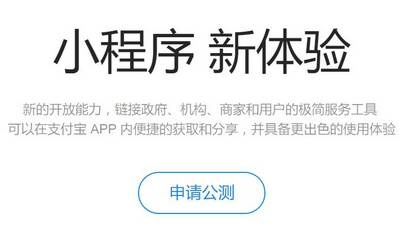
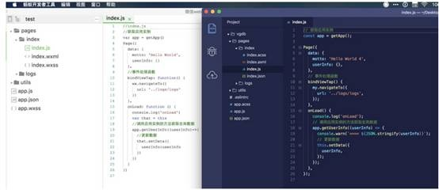

2017年1月9日，微信小程序正式上架，本以为微信小程序会对APP造成很严重的冲击，结果大半年过去了，微信小程序还处在一种不温不火的局面，但这却并未阻止竞争对手在小程序的这条道路上前赴后继。

最初支付宝小程序被曝出时，就有报道称，前者与微信小程序的开发工具和技术等几乎相同。如今公测开放，记者向小程序开发者了解到，双方的小程序的初始化Demo确实有很多相似之处。这不免让人猜测，这是支付宝是为了方便开发者可以直接将已有的微信小程序移植到支付宝平台，以减少开发所需的时间和技术成本。

体现的方式是，在示例代码中加入了一行“向微信小程序工程师致歉”。这封道歉信的言外之意是，虽然在示例代码中团队直接抄袭了微信的，但底层技术上还是用了支付宝自己的